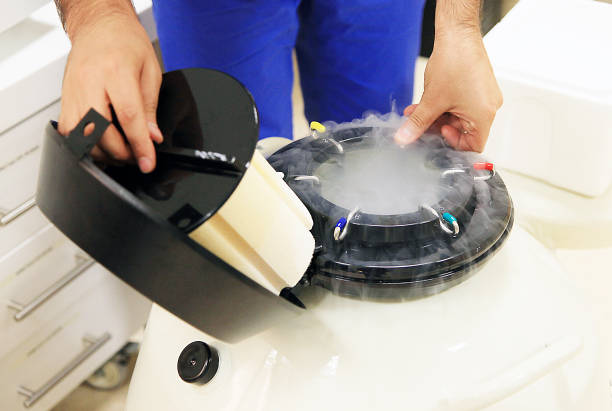

Advanced Fertility Treatment in Virar & Mumbai
Embryo cryopreservation is a cutting-edge technique that involves freezing and storing embryos for future use. This process is an essential part of assisted reproductive technology (ART), offering couples and individuals the flexibility to plan their families according to their own timelines. Here's a detailed look at embryo cryopreservation:
Embryo cryopreservation is the process of freezing and storing embryos at very low temperatures to preserve them for future use. These embryos can be thawed and transferred to a woman's uterus at a later date, potentially leading to pregnancy.
The process begins with ovarian stimulation, where hormones are administered to the woman to produce multiple eggs. Once mature, these eggs are retrieved through a minor surgical procedure.
The retrieved eggs are fertilized with sperm in a laboratory to create embryos. This can be done using conventional in vitro fertilization (IVF) or intracytoplasmic sperm injection (ICSI).
The fertilized eggs are monitored for several days (typically 3-5 days) as they develop into embryos.
The viable embryos are then frozen using a process called vitrification, which prevents the formation of ice crystals that can damage the cells. Vitrified embryos can be stored in liquid nitrogen at temperatures of around -196°C.
The frozen embryos are stored in cryogenic tanks until they are needed. They can be stored for many years without compromising their viability.
When the individual or couple is ready to attempt pregnancy, the embryos are thawed and carefully monitored. The best-quality embryos are then transferred to the woman’s uterus during a subsequent IVF cycle.
The success rates of embryo cryopreservation depend on various factors, including the age of the woman at the time of egg retrieval, the quality of the embryos, and the overall health of the individuals involved. Advances in vitrification techniques have significantly improved the survival rates of frozen-thawed embryos, leading to high pregnancy and live birth rates.
For more information or to schedule a consultation Contact Us. We are here to help you achieve your dream of parenthood.